Module: color_grading
Documentation last edited: October 22, 2025 at 10:46 UTC
Description
Color grading module that applies LUT texture color grading on screen. Has a bit of handy functions to make it work inside of editor as well.
Usage example
ColorGrading.change_LUT("sin_city2")

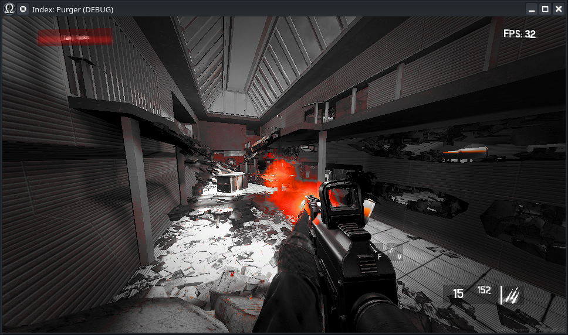
Yeah, it's easy as that, there's nothing much to say about it, except... You might wonder: How exactly do you make your own color grading LUT?
This is a clear LUT, that does not affect the colors:

Here's colder version of this LUT:
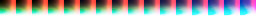
Here's a version of this LUT that highlights reds:
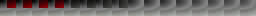
As you can probably see, the main thing about LUT (Look-Up Texture) - it is just an array of colors that can be used by the game's renderer. Here's step-by-step guide how to make one yourself.
Firstly, find a place you'd like to use as a "sample". I assume that you'd make color grading that *fits* specific place, but, either way, just find a place.
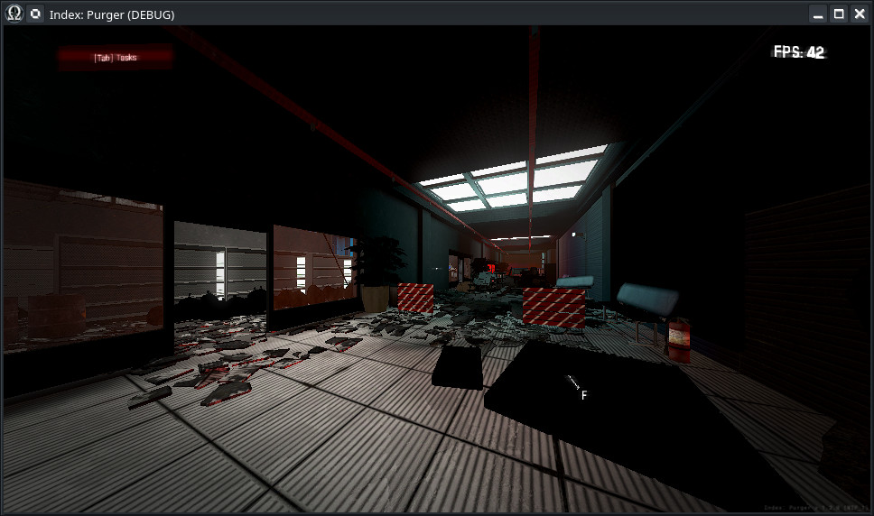
Open a developer menu (by using
dev_menu
console command) and find "Take LUT Screenshot" button in debug tools

After pressing this button, your game will temporarily freeze to take a screenshot with clear LUT sample on top. You need to locate
"user://screenshots"
to find your new screenshot. You can do it as easily as pressing this button in editor...

And then find your fancy new screenshot
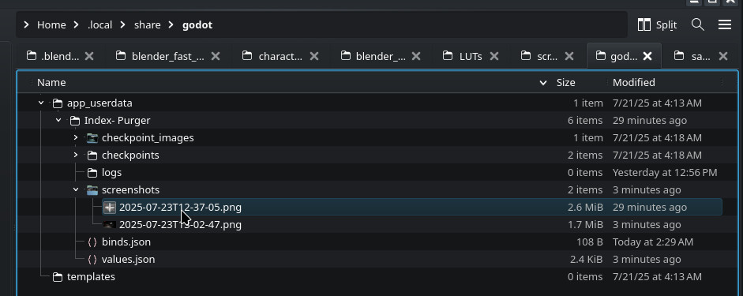

This is just a screenshot, of course, but it has additional information in it, that is an identity LUT texture placed on the top-left corner of the image

This gives you possibility to take this screenshot and edit it to your will. However, you need to know: You can't use all operations of your preferred image editor, but only those that are affecting ALL colors in your image. Effects like brightness, contrast, saturation, curves, tonemapping, highlighing, etc. In GIMP, you can find such effects under "colors" tab here.
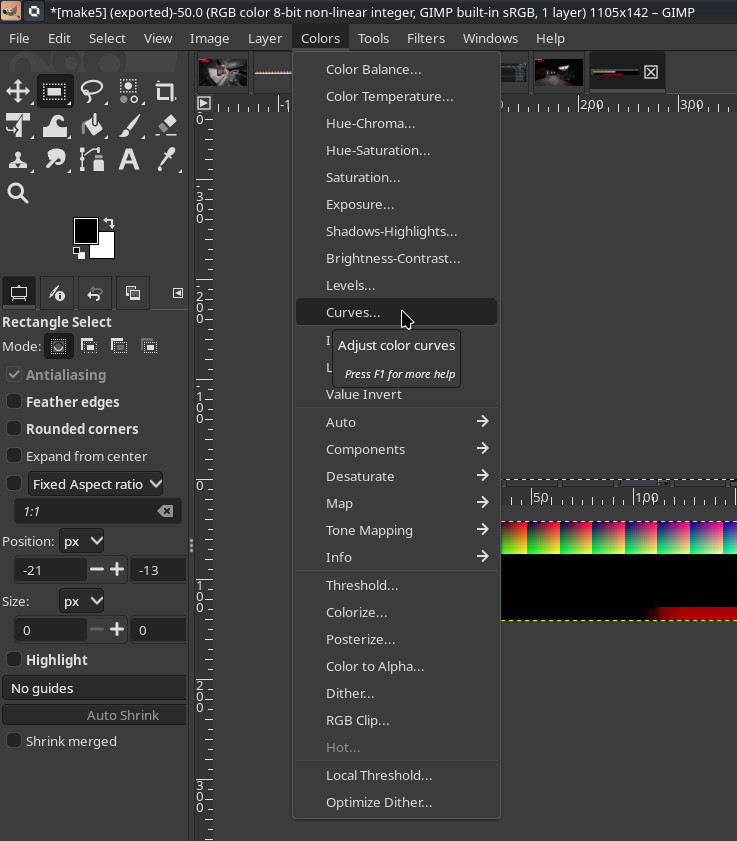
Let's assume that you've made all the changes related to your screenshot as you wanted, made it more cold for example
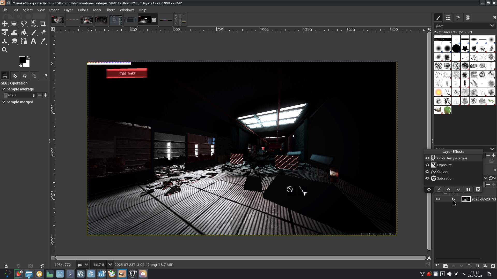
After this, you simply apply all effects, select this part of the image that is the LUT itself (notice how it changed its own colors too), and then you just copy it and create a new image based on your clipboard data
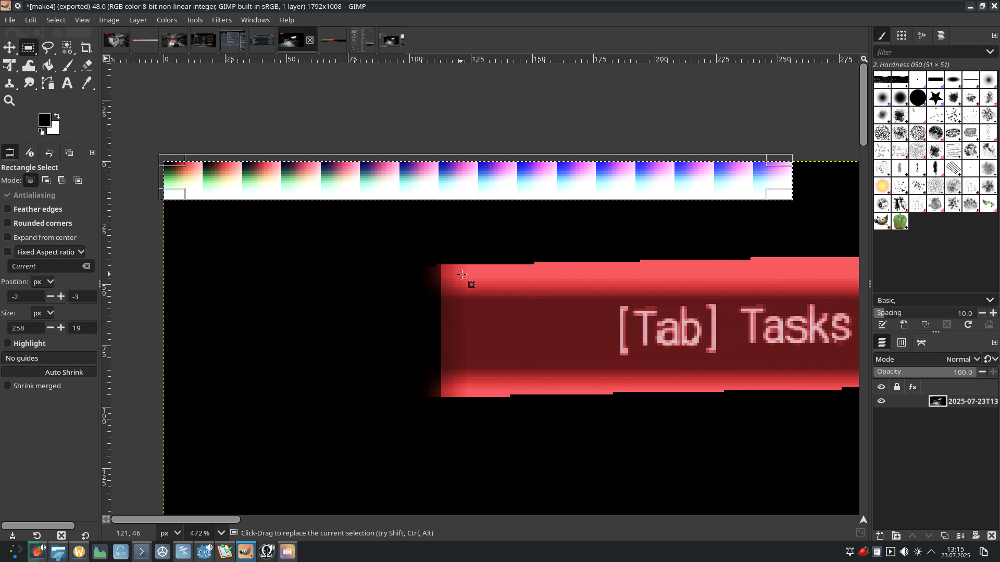

The last step in image editor is going to be about exporting your new LUT texture. All LUT textures are saved at
"res://modules/color_grading/assets/LUTs/"
as .PNG image files, and name of your image file sets the name of future color grading LUT as well
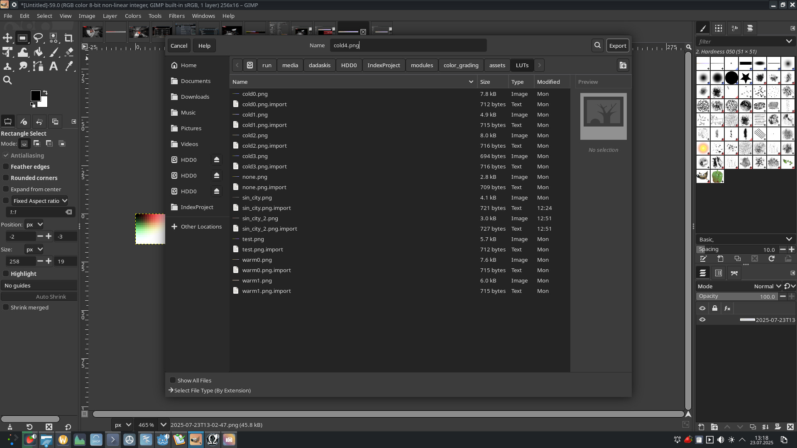
Sadly, there's one more step that is related editor importing settings. By default, .PNG textures have VRAM compression, repetition, and other unnecessary settings that will make LUT look even more broken that it actually is. To fix that, locate your LUT in Godot and double click it...

Change your import settings to the following...
Compression mode: Lossless
Repeat: Disabled
Filter: Disabled
Mipmaps: Disabled
Anisotropic: Disabled
sRGB: Disable
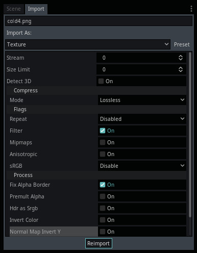
And... after all this... You should be good to go. You can test your fancy new color grading in game using dev-menu:

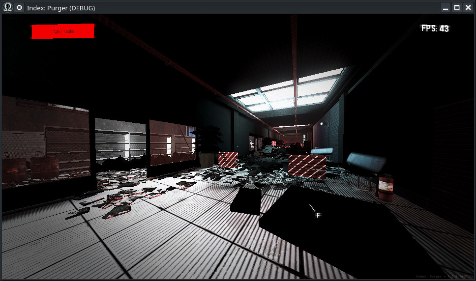
You can use color grading in multiple ways. Firstly, you can set color grading LUT in one of the
LocationBase
exports, which will set color grading for the entire location. This will also enable in-editor preview of your LUT. You can also use AssetHelper to assign a LUT too.

Or you can use
st_change_location_lut_texture
which will allow you to switch a LUT based on a location event.
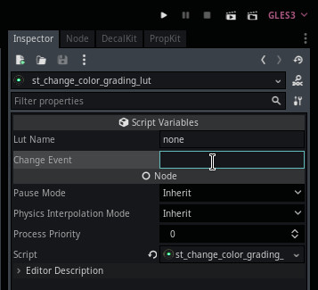
Have fun changing colors. Color grading doesn't have any performance cost, so you can use it as much as you wish. Players, of course, still have a possibility to disable color grading in its entirety, because... as it seems there are always players that love to disable it for whichever reason.
General Information
Root directories list
assets, docs, src
Nodes
Classes
None
Resources
None
Other Scripts
None